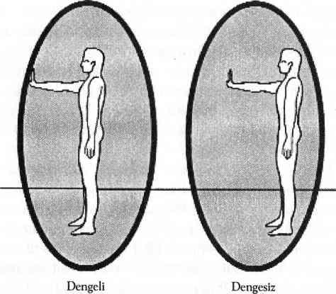

AURAYI YORUMLAMAK
Tüm eğitimim boyunca ve tüm tecrübelerimin arasında aura yorumlamak en karmaşık olanıydı. Bir gün içinde auramı onlarca uzmana gösterecek olsam bir o kadar farklı sonuç almam mümkündür çünkü auralar çok canlı ve değişkendirler. Hangi rengin, hangi nüansın ya da hangi değişikliğin ne anlama geldiğini kesin olarak bilmek imkansızdır.
Bence aura konusunda çalışma ansiklopediler dolusu kitap yorumlamayı gerektiren yorucu bir çalışmadır. Her aura hakkında öğrenilmesi gereken tonlarca şey vardır. Ama düşünecek olursanız beden hakkında da öğrenilmesi gereken ansiklopediler dolusu bilgi vardır ve bilmediğimiz ya da bize söylenmeyen binlerce fonksiyonu gayri ihtiyari kabulleniriz.
Bedenimizin içinde yaşamaya ve ona bakmaya başladığımızda dışarıdan daha az tedavi ve akıl alma eğiliminde oluruz. Bedenimiz bize ne yiyip içmemiz, hangi sporu yapmamız, hangi çevreyi, duyguları ve ilişkileri seçmemiz gerektiği konusunda bir şeyler söylediğinde onu dikkatle dinleyecek olursak sağlıklı kalmak basit bir iş haline gelir. Aynı şey aura için de geçerlidir. Eğer auramızın içinde yaşar ve onu dikkatle dinlersek, bize kendisi için gerekli olan her şeyi söyleyecektir. Çok iyi aura okuyucusu olmak her dakika auraları çalışarak değil ama kendi enerji sınırlarımızın farkındalığına erişerek mümkündür.
Auralar da tıpkı bedenler gibi bireyseldirler. İşaret olarak alınabilecek aura örnekleri varsa da “mor aura spiritüel ilerlemeyi gösterir” gibi genellemeler aura okuyucusunu kuşkulu tanımlamalara sürükler. Kitaba aura renklerinin bir listesini koyacak olmama karşın bunu çok fazla ciddiye almanızı istemiyorum. Üstelik auralar saat başı ve hatta dakika başı renk değişikliği gösterirler. Renk yorumları tamamen sübjektiftir. Eğer size auranızdaki yeşil rengin değişme ve gelişme olduğunu söylersem ama auranızdaki yeşil size daralmayı çağrıştırıyorsa o zaman o daralmadır; ne de olsa o sizin auranızdır, sizin deneyimlerinizi ve duygularınızı yansıtmaktadır. Yansıttığı renkler ve görüntüler sizin için anlamı olan özel şeylerdir.
Başkalarını okuduğum ya da tedavi ettiğim zaman auralarının renklerini yorumlamam. Perdeleri kapatırım. Belirli renkleri yorumlamaya çalışmak ve her yeni insanda bunun anlamlarını çözmeye çalışmak yerine karşımdaki insanın aurasının bedeninin hangi bölümlerini etkilediğini elimdeki çakralarla hissetmeye çalışırım.
Aura yorumlamaları sırasında sıcak ve soğuk noktaları, delikleri, bütünlük hissini, büyüklüğü, çıkıntıları ve buna benzer diğer oluşumları araştırırım. Hissettiklerimi sözlü olarak aktarırım. Genellikle ben daha parmağımı bile oynatmadan o kişinin aurası kendini tamir etmeye ve şekillenmeye başlar.
Her aura diğerlerinden ve yorumlamadan yorumlamaya göre ilk şeklinden farklılık gösterir. Daha önce de söylediğim gibi auralar değişken, aldatıcı ve tamamen bireyseldir. Auraların tek ortak noktası herhangi bir formda varolmalarıdır. Hemen gözlemlenemeseler bile bedenin etrafındaki enerji aura şekline sokulabilir. Bu yardımla aura hemen kendisini toplayacaktır. Ben ilaç ve psikolojik sorunlar yüzünden yıpranmış çok aura gördüm ama hepsi bir şekilde daima oradaydılar.
Auralarda bana hiçbir şey ifade etmeyen enerjiler ya da sapmalar da gördüğüm olur. Böyle durumlarda kendi auramın diğer aura ile iletişim kurarak bana yollayacağı bir görüntü ya da duygu için ona dönerim.
Bu önemli bir noktadır. Psişikler daima diğer kaynaklardan ve rehberlerinden yardım almalarına karşın daima kendi anlayışlarına dayanarak yorumlama yaparlar. İyi bir psişik olmanın en önemli unsuru mümkün olduğunca dolu dolu yaşayarak bilgi ve tecrübe edinmek; değişik yorumlama ya da tedavi durumları ile karşılaşıldığında kullanacak geniş bir bilgi dağarcığına sahip olmaktır. İyi bir okuyucu algıladığı bilginin doğruluğuna güvenir. Bu başkalarını okurken de en az kişinin kendisini yorumlaması kadar doğrudur.
Ben size aura yorumlama ana çizgilerini verdikten sonra siz uygun gelmeyen yorumlama yöntemlerini değiştirmekten hiç çekinmeyin. Benim çok hassas ellerim var ve yorumlamalarımı bir nevi empatik algılamayla yapıyorum. Sizin gözleriniz ya da kulaklarınız çok hassas olabilir ve siz yorumlamanızı bu yeteneklerinizle yapabilirsiniz. Ben size aurayı hissedin diyorum ama siz auraları görebilir, duyabilir ya da başka şekillerle hissedebilirsiniz; kendi yeteneklerinizi kullanın. Sizin yetenekleriniz ve auranız benden farklı olabilir.
AURA YORUMLAMANIN ANA HATLARI
Auranızı yorumlamak için her zamanki topraklanmış meditatif oturuşunuza geçin. Bedeninizi ve auranızı vakumları kullanarak eski enerjilerden temizleyin, auranızı aydınlatın ve sınırlarını altın ışıkla belirleyin. Altın enerji şimdiki zamana ait iyileşme enerjisidir ve auranız bunu onun şu anda ne yaptığını görmek istemeniz olarak algılayacaktır.
Altın enerji ile auranızı belirledikten sonra kafanızın içindeki odada kalın ve altın enerjinin auranızın size göstermek istediği renklere dönüşmesini sağlayın. Renk değişiklikleri ile birlikte oluşacak biçim değişikliklerini ve sapmaları gözlemlemeyi unutmayın. Eğer bu noktada bir şey göremezseniz o zaman gözlerinizi kapatın ve auranızın sınırlarına dokunmaya çalışın. El çakraları renk titreşimlerini rahatlıkla algılayabilir. Kapalı gözleriniz size tek renkli bir aura verirse bundan endişe duymamalısınız. Beyniniz ellerinizden gelen mesajı kolayca algılayabilme ve anlama yeteneğine sahiptir. Bu pek çok psişiğin çalışma yöntemidir.
AURA RENKLERİ
Bunlar, renkler hakkında genel görüşlerdir. En doğru olan yorumlar hiç kuşkusuz sizin yorumlarınız olacaktır.
PEMBE: İyileştirici mizah anlayışı, aşağılamadan, suiistimalden korunma, kararsızlık.
KIRMIZI: Birinci çakra, ayak çakraları, fiziksel beden, güç, kızgınlık, cinsellik.
TURUNCU: İkinci çakra, duygular, kaslar, öfke, duyarlılık, şifa.
SARI: Üçüncü çakra, akıl, bağışıklık ve korunma, sabırsızlık, korku.
YEŞİL: Dördüncü çakra, el çakraları, sevgi, değişim, şifa, hayal kırıklığı, kayıp.
MAVİ: Beşinci çakra, iletişim, spiritüel bilgelik, yas tutma, ayrılık.
MOR/ÇİVİT MAVİSİ: Altıncı çakra, spiritüel kudret, telepati, haksızlığa uğrama, kurban edilme.
MENEKŞE MORU: Yedinci çakra, spiritüel kesinlik, serbest bırakma, dinsel karmaşa.
KAHVERENGİ: Ayak çakraları, yeryüzü enerjisi, toprağa bağlılık, geçmiş olaylar.
SİYAH: Son, ölüm, yeniden doğuş, erteleme.
BEYAZ: Manevi rehber mevcudiyeti, saflık, şok, silme.
GÜMÜŞ: Manevi dünya bilgisi, toprağa bağlı olmama, belirsizlik.
ALTIN: Sekizinci çakra, şifa, nötr olma, peygamberlik enerjisi, dönüştürücü hastalık.
Kural olarak ana renklerin pastel tonları daha zayıf bir yorumlamaya; daha koyu tonları da daha güçlü bir yorumlamaya delalet edebilir. Karışık renkler ise karma bir mesaj verir. Örneğin auramdaki açık sarı renk benim zihinsel olarak az çok bir çıkmazda olduğumun; bir parça sabırsız davrandığımın ya da güvenli olmayan bir çevrede azıcık korktuğumun belirtisi olabilir. Parlak bir sarı ise sürekli düşünceler içinde olduğumun; çok sabırsız olduğumun ya da tehlikeli bir ortamda sürekli olarak korkarak kendimi koruduğumun işareti olabilir.
Öte yandan, auramda turuncuya kaçan sarı renk, duygusal gerçekliği düşünce sürecime dahil etmeye çalıştığımın; duyarlılığımı korumak için korku enerjisini kullandığımın göstergesi olabilir ya da duygusal anlamda çok sabırsız davrandığımı işaret ediyor olabilir. Sizin kendi auranızda bu renklerin anlamı tamamen farklı olabilir. Önerim, duygularınızı kanalize edip yönlendirdiğinizde kendinize güvenmenizdir.
Duygularınızı yönlendirdiğinizde bir renk şeması ve iyileştirmek istediğiniz duygusal durumu seçersiniz. Seçtiğiniz rengin enerjinizle çalışırken sizin duygusal durumunuzu temsil etmesini sağlarsınız. Kendi auranızı okurken bu akışı tersine çevirerek renklere, renk tonlarına size anlatmak istedikleri duyguları ve olayları sorabilirsiniz. Bunu yapabilmek için kafanızın içinde kalın ve auranızın ana renklerini ya da tonlarını hissedin. Bedeninizin hissettiğiniz ana renk ya da ton için bir anı ya da duygu göstermesini bekleyin.
Zihniniz enerji hakkında size bir dizi imge ya da açıklama sunarak enerjiyi yorumlamanıza da yardım edebilir. Her durumda da kendi tercüme edilmiş görüntünüze teşekkür edin ve elde ettiğiniz bilgiyi kullanarak yorumlamaya devam edin.
Şu anda auranızda gördüğünüz renklerle hemen evlenmeye kalkışmayın ya da renklerin evrimleşme düzeyi nedeniyle kendinizi yargılamayın. Auranız şu anda yeşil ve siyah olabilir ama biraz sonra mor ve altın rengine dönüşecek ya da arada parlak pembe ve mavi görünecektir. Bu yorumlama sırasında auranız kendisini dondurarak yorumlamanıza olanak sağlar. Oysa normal zamanda auranız o kadar çabuk hareket eder ve değişir ki takip etmeniz mümkün değildir. Şu anda görmekte olduğunuz renkler sadece anlık olarak geçerlidir.
Auranızın şu anda size göstermekte olduğu şeyler hemen dikkatinizi çekmek istediği noktalardır. Bu dikkat, topraklanmanız ve odaklanmanızdır. Aura yorumlamayı bitirdikten sonra uygulayacağınız altın güneş tedavisi auranızın şu andaki tüm sorunlarını çözecektir.
Tecrübelerime göre bir aura yorumlamasında renkten daha önemli olan auranın biçimi ve durumudur. Şimdiye kadar auranın biçimini ve durumunu tanımlamayı öğrendik. Aurayı tanımlamak için seçtiğimiz parlak renkleri, rengini tespit etmek için değil şeklini çizmek için kullandık.
Benim parlak morumsu kırmızı ile sınırlarını çizdiğim auram, ben içini morumsu kırmızının pastel bir tonuyla boyamış olsam bile, bu sınırların içinde kendi istediği renktedir. Morumsu kırmızı enerjiyi kullanmamın nedeni, kişisel alanımın tamlığının, bütünlüğünün sürekli farkındalığına sahip olmamda bana yardım etmesidir. Benim morumsu kırmızım aydınlanır ve auramın olmasını dilediğim alanın sınırlarını belirler; bu da aurama nerede olması gerektiğini hatırlatmaya yarar. Morumsu kırmızının pastel tonunun kullanılması, bedensel farkındalığımın aurik farkındalığımla bağlantı kurması içindir; yoksa daha güzel bulabileceğim başka renkler auramın doğal renklerinin yerini alsın diye değil.
Auranız gerçek rengini ve enerjilerini gösterdiğinde aynı zamanda size boyutlarındaki ve şeklindeki bozuklukları da gösterebilir. Bunlar en sonunda altın güneş tedavisini uyguladığınız zaman düzelecek ve iyileşecektir şimdi öncelikli olarak her sapmanın neye işaret edebileceğini görelim.
Uyarı: Bu alıştırmaların ve açıklamaların amacı auranıza keyfi kaçıkken azıcık destek olabilmektir. Eğer auranız sürekli olarak “tokat yemiş” gibiyse, dalgalanıyorsa ve siz şu anda alkol almadıysanız ya da madde kullanmıyorsanız o zaman büyük bir olasılıkla çakralarınız hizadan çıkmış demektir. Bu önemli bir sorun değildir ama çakralarınızı auranızı manipüle ederek hizalayamazsınız.
Altın güneş tedavisini uyguladıktan sonra bile hala auranızın sınırları belirgin değilse ya da hala karmaşık enerjilerle doluysa o zaman “Çakraları Yorumlamak” bölümüne atlayın. Çakralarınız iyileştiğinde ve hizalandığında aura genellikle kendi başının çaresine bakacak duruma gelir.
Alkol ya da madde kullanıyorsanız enerjiniz kargaşa içinde olacaktır. Auranız büyük bir olasılıkla sağlıklı değildir, sürekli bir topraklama kordonu sağlayamazsınız ya da çakralarınız sağlıklı değildir. Eğer bu maddelerin kullanımını bırakmak istiyorsanız bu kitaptaki araçlar işinizi kolaylaştıracaktır ama eğer bedeninizi ve enerjinizi madde kullanarak tahrip etmekte ısrar ederseniz bu kitabın size hiçbir faydası olmayacaktır.
AURANIN BOYU
Burada anlatılan aura boyu sınıflandırmaları daha önce biçimini tarif ettiğimiz bir kol mesafesinde bulunan elips şekilli auralarla ilgilidir.
Fazla Küçük Aura: Çepeçevre incecik bir aura sınırı (bedenden yarım metreden daha kısa mesafede olan bütün boylar) destekleyici olmayan; hatta hayati tehlike taşıyan bir çevreye karşı tepkiyi işaret eder. Şayet görünmez auranız hayatınızda ya da ilişkilerinizde gereksinimi olan boyutta bir alanı kaplayamıyorsa, gelişmeniz ve tekamül etmeniz için gereken özgürlüğe sahip olmadığınız çok açıktır.
Çoğu durumda tehditkar bir çevrede yaşamayı aslında bilinçsiz bir şekilde biz seçeriz. Bunun iki nedeni vardır; birincisi, çevremizdeki insanlar ilerlememize engel olurlar ve biz de bu sayede gelişip değişmenin korkusuyla yüzleşmek zorunda kalmayız. İkincisi de, farkındalığımızı olması gerekenden daha küçük bir alan içinde hapsederler ve biz de bu sayede zamanımızın büyük bölümünü bedenimizde ya da bedenimizin yakınında geçiririz. Ama artık bedenimizin içinde kalmayı öğrendiğimize göre auralarımızı daha fazla kısıtlamamıza ya da sıkıştırmamıza da gerek kalmayacak.
Bilincinizin neresinde olduğunuz önemli değildir, auranızın bilincinizin sağlıklı bir yerinde olmaya ihtiyacı vardır ve sizin de auranızı gereksindiği alana taşıyacak bir çevrede olmaya ihtiyacınız vardır. Eğer auranız kısıtlandırılmış durumdaysa, onu genişletme çalışmalarınız daha şimdiden mevcut tehditkar çevrenizde birtakım sıkıntılara yol açmaya başlamıştır bile.
Eğer normalden daha küçük bir auranız varsa kendinize bakmanız ve sık sık sözleşmelerinizi yakmanız gerekir. Kendinize ve auranıza daha fazla özgürlük sağlayacak bir çevreye geçin. Kolay olmadığını biliyorum. Bu kesinlikle hayatidir.
Fazla Geniş Aura: Sınırları bütün odayı kaplayan bir aura can sıkıntısını ya da madde bağımlılığını işaret eder. Bana yeniden madde bağımlılığı nutkumu attırmayın. Enerjinizi toplayın, tamam mı? Devasa boyutlarda bir aura (bedenden bir metreden daha uzak mesafede olan bütün boylar) inanılmaz büyüklükte spiritüel ve fiziksel enerjinin boşa harcanmakta olduğunun göstergesidir. Devasa boyutlarda aurası olanlar genellikle bedenlerinin dışındadırlar çünkü büyük olasılıkla yapacak bir şeyleri yoktur.
Eğer amaçsızca ortalarda dolanmak istiyorsanız ve hayatınızın anlamını aramaya niyetiniz yoksa devasa auranızı olması gerektiği sınırlara çekmek size çok rahatsızlık verebilir. Auranız ve enerjiniz olması gerektiği boyutlara geri döndüğünde kendinizi kısıtlanmış ve sandığınızdan daha dar olan hayat yolunda kararlar almak zorunda bulursunuz. Korku böyle düşünmeyi gerektirir. Bu korkular için bir renk seçin ve duygusal enerjilerinizi sizi neden korumaya çalıştıklarını görmek için kanalize edin; sonra da size vermek istedikleri mesajları dinleyin.
AURANIN BİÇİMİ
Auraların oval biçimi sayısız sapma gösterebilir. Bu sapmalara yumrular, yırtıklar, delikler, eğimler ve başka eksiklikler de dahildir. Bir sonraki bölümde spesifik sapmaları ele alacağız. Burada size auranın her yönde genel görünümündeki sapmaların ne anlama geldiğine dair bilgi vermek istiyorum.
Ön Taraf: Auranın cephesindeki herhangi bir sapma gelecekle ve bilinçli zihinle ilintilidir. Aurasının ön tarafı çok geniş olan kişiler (ve arka bölümü bedene çok yakın olan kişiler: Şekil 10) geleceğe, planlarına ya da hayallerine çok fazla enerji harcıyorlar demektir. Böyle biri büyük bir olasılıkla bedeninden dışarıdadır ve geçmişini göz ardı ederek; bilinçaltı mesajlarını duymazdan gelerek sürekli ileri doğru fırlayıp gidecekmiş gibi yaşar. Aurasının arkasını genişleterek geçmişin getirdiği derslere ve yarım kalmış işlere yer açması onu sakinleştirecektir.
Auranızın önündeki yaralar yakın gelecekte oluşacak bir travmaya karşı auranızın durugörü yeteneğiyle sizi uyarması anlamına gelebilir. Bu travmayı bilinç düzeyinde kontrol altına alabilir ve sonra da bu travmayla olan sözleşmenizi yakabilirsiniz. Durugörüyle gelecekteki olayları gördüğünüzde genellikle bunları değiştirebilirsiniz.
Arka Taraf: Auranızın arka tarafı geçmiş, bilinçaltı ve şu andaki hayat görüşünüzün temellendiği oluşumlardır. Geriye doğru eğrilmiş, ön tarafında yeterince yer olmayan ve arkası da fazla geniş olan bir aura o kişinin ilerlemesinin durduğunun göstergesidir. Çünkü bu kişi tüm enerjisini geçmişe odaklamaktadır. Ön tarafın desteği olmadığı için eskiyi bilinci ile kontrol etmekten yoksundur ve geçmişi tarafından hırpalanabilir.
Arka bölümdeki yaralar ve yırtıklar hatırlanmayan anılara ya da geçmiş zamana ait görmezden gelinmiş yaralara işaret eder. Altın güneş tedavisi bu eski yaraları gündeme getirerek onları bugünkü yetenekleriniz ve farkındalığınızla iyileştirmenize olanak sağlar. Auranızın ön bölümünü genişletmeniz şimdiki zaman ve gelecek için yeterli yer sağlayarak size yardım eder.

Şekil 10. Dengeli ve Dengesiz Aura Örneği
Sol Taraf: Auranızın sol tarafı sizin dişi enerjinizi gösterir. Kadın ya da erkek olmanız fark etmez. Dişi enerji ayrıntıyı, sezgiselliği, kavrayışı ve beynin sağ lobunun kontrol ettiği faaliyetleri kapsar. Auranın sol tarafındaki yaralar ya da darbe izleri benliğin dişi yanının reddedildiğini ya da çok fazla dişi enerji kullanan birinin müdahalesini gösterir.
Auranızın sol tarafı sizin hem öte alemden bilgi ve rehberlik almaya hem de fiziksel dünyadan destek ve sevgi almaya ne kadar yeteneğiniz olduğunu da gösterir. Auranın sol yanının devasa büyüklükte olması ciddi bir biçimde alıcı olmaya ve başkalarına bağımlılığa işaret eder; iyice sıkışmış görünen bir sol tarafsa başkalarını dinleme ve alıcı olma konusunda isteksizlik belirtisidir.
Sağ Taraf: Auranızın sağ yanı sizin eril enerjinizi temsil eder. Kadın ya da erkek olmanız fark etmez. Erkeksi enerji odaklanmayı, ayırt etmeyi, ifadeyi ve beynin sol lobunun kontrol ettiği faaliyetleri kapsar. Auranın sağ tarafındaki yaralar ya da darbe izleri benliğin eril yanının reddedildiğini ya da çok fazla eril enerji kullanan birinin müdahalesini gösterir.
Auranızın sağ yanının durumu sizin verme, öğretme, konuşma ve iç dünyanızı dışa yansıtma yeteneklerinizi (ya da buna izin verip vermediğinizi) gösterir. Auranın sağ tarafının devasa boyutlarda olması ifade etmeye ciddi bir bağımlılık olduğunun göstergesidir; sağ tarafın büzüşmüş olmasıysa harekete geçme, konuşma ya da kendini ifade etmede gönülsüzlüğe işaret eder.
Üst Taraf (Göğüs hizasından yukarısı): Auranın üst tarafı ruhla bağlantıda olmayla ve ruhtan gelen bilgi ya da rehberliğin verdiği rahatlamayla ilgilidir. Ruh tanımı, Tanrı’yı, size rehberlik eden ruhları ve melekleri ya da şu anda bedeni olmayan tanıdığınız herhangi birini de kapsar. Eğer auranızın üst tarafı başınıza yapışacak kadar ezik duruyorsa bu spiritüel bilgiye inanmadığınızı ya da güvenmediğinizi işaret ediyor olabilir. Diğer yandan auranın üst tarafının fazlasıyla esnemiş ve büyümüş olması enerjinizin çok büyük bölümünü hayatın kozmik yönüne adadığınız; bedeninizi ve fiziksel hayatınızı neredeyse tamamen yok farz ettiğiniz anlamına gelebilir.
Auranın üst tarafındaki yaralar ve sapmalar cezalandırıcı bir dine, inanç sisteminizdeki bir boşluğa ya da maneviyattan ve gerektirdiği destekten yoksun kaldığınıza işaret edebilir. Auranın üst tarafını genişletmeniz spiritüelliğinizi daha anlayışlı ve kullanışlı hale getirebilir.
Orta Taraf (Bedenin her yanında göğüs hizasından dizlere kadar olan bölüm): Auranızın orta tarafının durumu günlük fiziksel hayatınızla ilişkilidir. Bu bölgedeki bozukluklar auranızın fiziksel sorunlarınızı ya size göstermeye çalıştığının ya da kendi başına iyileştirmeye çalıştığının işaretidir.
Auranız kimi zaman size bedeninizin bir uzvu çevresinde bir renk yumrusu ya da enerji atışı göstererek sizi o uzuvda olan ya da olacak bir sorun konusunda uyarır. Altın güneş enerjinizi gösterilen bölgeye yönlendirin ya da bir akupunktur uzmanına başvurun. Çin tıbbı enerji üzerinde beş bin yıllık başarılı bir geçmişe sahiptir ve beden ile ruh arasında berrak, topraklanmış, sağlıklı bağlantı kurmak konusunda eşsiz bir kaynaktır. Çin tıbbı aynı zamanda enerjiye de saygılıdır; Batı tıbbında sıklıkla olduğu gibi bedeninizden çekip gidin diye size tekmeyi basmaz ve ilaçları da yan etki yaratmaz.
Auranızın orta bölümü aynı zamanda fani bir beden olan siz ile ölümsüz bir ruh olan siz arasındaki iletişimin de göstergesidir. Sallanan ya da belirgin olamayan orta bölüm beden ile ruh arasındaki ilişkinin ideal durumda olmadığını işaret eder. Topraklanmaya devam edin. Başaracaksınız.
Alt Taraf (Dizlerden aşağıya kadar olan kısım): Auranızın alt tarafı topraklanma yeteneğinizi gösterir. Auranızın alt tarafındaki şekilsizlikler ya da eksiklikler topraklanma konusundaki gönülsüzlüğünüzü ya da topraklanamamanızı işaret ediyor olabilir. Alt tarafta auranın bulanık olması egzersiz yapmadığınızın (ki doğal topraklanma yoludur) ve bedeninize özen göstermediğinizin belirtisi de olabilir.
Üstten aşağı doğru çekilen auraya dikkat edin. Kendinizi çok zor topraklıyor ve auranızı aşağı doğru çekerek ruhunuzu dinleyemez hale mi geliyorsunuz? Yoksa topraklanmanızı yukarı çekerek auranızın üst tarafını sihirli cevaplar arayışıyla uçuşa mı geçiriyorsunuz? Size bir ipucu vereyim bütün sihir burada. Bedeninizin içinde kalarak topraklandığınızda ve manevi bilgilerinizle bağlantıda kaldığınızda cevabı bulmanız çok daha kolaydır. Bizler bedenlerimizin içindeki ruhlarız; ne sadece ruh ne de sadece bedeniz. Bütün olmak demek bize ait olan her şeyi bir arada ve dengede tutmak demektir.
Auranızdaki her türlü yırtık, yumru, esneme ya da eksiklik aura sınırlarınızı şimdiki zaman altın enerjisi ile yeniden çizdiğinizde ve daha sonra altın güneş tedavisini uyguladığınızda iyileştirilebilir. Aslında her türlü aura sınırı tanımlamasını ve altın güneş tedavisini auranızı okuyup iyileştirmenin çabuk ve kısa bir yolu olarak kullanabilirsiniz.
Daha gelişmiş aura yorumlama yöntemleri aura sapmalarının daha basit yöntemlere cevap vermediği durumlarda geçerlidir. Bu noktada bütünlüklü bir aura yorumlaması gereklidir.
AURADA SAPMALAR
Artık auranın hangi bölümlerinin neye işaret ettiğini öğrendiğimize göre belirgin sapmaların ve yaraların neyin göstergesi olduğuna da bakabiliriz. Hemen her durumda zaten öğrenmiş olduğunuz altın güneş tedavisinin bu yaraları iyileştirebileceğini aklınızdan çıkarmayın.
Baloncuklar: Aurada görülen renk baloncukları enerji bedeninizdeki ya da fiziksel bedeninizdeki enerji tıkanmalarını gösteriyor olabilir. Auranızdaki baloncukların spesifik özellikleri varsa “Soğuk Noktalar” “Sıcak Noktalar” ve “Nabız Atışları” bölümlerindeki açıklamaları okuyun. Bundan bir sonuç alamazsanız o zaman baloncuğun kendisine niye orada olduğunu sorun. Şayet baloncuklar sizin duygusal, zihinsel ya da spiritüel bedeninizden geliyorlarsa genellikle size tıkandığınız bir ilişkiyi ya da düşünce silsilesini göstereceklerdir. Bu baloncukları sözleşmeleri yakarak ya da imajları yıkarak temizleyebilirsiniz.
Eğer baloncuklar fiziksel bedeninizle ilintiliyse o zaman genellikle hastalığın ya da zorluğun kaynaklandığı bölgenin etrafında dolanırlar. Baloncuklar kimi zaman bedeninize nasıl baktığınızı ya da rahatsızlığa yol açan bir yiyeceğin imgesini gösterirler size. Destek almak için bir akupunktur uzmanıyla görüşün. Akupunktur uzmanları bedeni, enerji meridyenleri sistemi olarak görür; tıkanmış enerjiyi tespit etme ve açma yetenekleri vardır.
Baloncuklarınız size başka birinin resmini gösteriyorsa bunun anlamı bu kişiyle rahatsızlık veren bir sözleşme ilişkisi içinde olduğunuzdur. Böyle bir durumda gördüğünüz baloncuklar sözleşmeniz olan bu kişiye ait enerji parçalarıdır ve kişisel enerjisi sizin auranızda iş göremez hale gelmiştir. Sözleşmenizi ve imajlarınızı yakın ve ayrıldığınızı kesinleştirene kadar en azından bir gün bu kişiden uzak durun. Kimi zaman tam bir ayrılık sağlamak için birkaç kez sözleşme ve imaj yakma işlemi yapmak gerekebilir. Çalışma sırasında altın güneş enerjinizi bir zamanlar baloncuğun olduğu yere yönlendirmeyi ve auranızı topraklanmış nöbetçi battaniyesi ile örtmeyi ihmal etmeyin.
Çıkıntılar: Çıkıntılı alanlar genellikle auranızdaki bir çarpıklığın ya da auranızın aksi yönünde bulunan bir çöküntünün işaretidir ki, bu da ya çıkıntının sebebidir ya da çıkıntıya verilen tepkidir. Çıkıntılar genellikle benliğinizin bir yanının kendisini tuzağa düşmüş hissettiğini ve birtakım sınırlamalarla (sizin tarafınızdan ya da toplum tarafından koyulmuş kurallar) içeri gömüldüğünü işaret eder. Benliğinizin zıt yanı bir çıkıntı oluşturarak dünyada daha fazla alan kaplamaya çalışacaktır. Şu anda auranızın sağ yanında bir çöküntü varsa, -ki bu, kendinizi ya da erkeksi yönünüzü ifade etmek konusunda rahat olmadığınız anlamına geliyor olabilir- oradan oraya savruluyor olmanız ve dişi enerjiye aşırı bağımlılık gösteriyor olmanız mümkündür. Ancak, eril enerjiyle dengede olmadığı için tek taraflı dişi enerji kullanmanız uzun vadede sağlıklı değildir. Bu tür çıkıntı-çöküntü rahatsızlıklarını olağan aura tanımlaması ya da altın güneş tedavisi sırasında elinizle çıkıntıya bastırıp diğer yanda